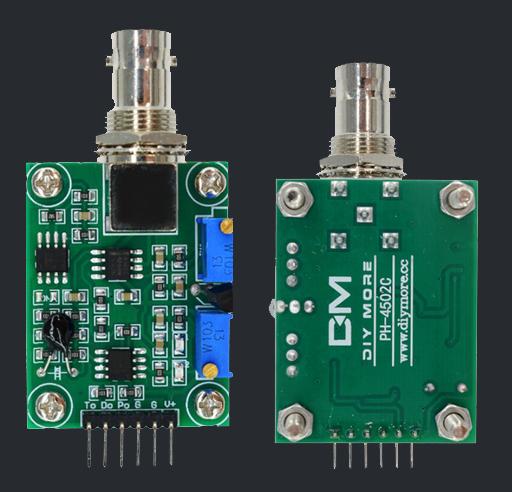

Table of Contents
This Arduino library provides a convenient and easy-to-use interface for the PH4502C sensor, allowing you to effortlessly integrate it into your Arduino projects. The PH4502C sensor is a high-precision pH sensor capable of accurately measuring pH levels in various applications.

Features
- Simple and intuitive API for interacting with the PH4502 sensor.
- Supports pH measurement with high precision and accuracy. Automatic temperature compensation for more accurate readings.
- Flexible calibration options to ensure optimal performance.
- Lightweight and efficient implementation for resource-constrained Arduino boards.
Installation
To use the PH4502 Sensor Arduino Library, follow these steps:
Installation on Arduino IDE
Just type "PH4502C-Sensor" on the Library Manager of the Arduino IDE.

Alternatively you can follow the steps below:
Download the library by clicking on the "Download" button or clone it using Git:
git clone https://github.com/nthnn/PH4502C-Sensor.gitPlace the downloaded library folder into the Arduino libraries directory on your computer. In Windows, the default location is usually:
[Arduino Documents Folder]/libraries/- Launch the Arduino IDE. Then, click on "Sketch" and then navigate to Include Library. You should see the newly added "PH4502-Sensor" option. Click on it to include the library in your sketch.
Now you are ready to use the PH4502 Sensor Library in your Arduino projects.
Installation on PlatformIO
Type "PH4502C-Sensor" on the PlatformIO library registry, and click "Add Project." And that's it!

Getting Started
To begin using the PH4502 Sensor Library, follow these simple steps:
- Connect your PH4502C sensor to your Arduino board. Make sure to connect the appropriate VCC, GND, and data pins based on your Arduino model and pin configuration.
In your Arduino sketch, include the PH4502C Sensor Library by adding the following line at the top of your code:
#include <ph4502c_sensor.h>Arduino Library for PH4502C Sensor.Create an instance of the
PH4502C_Sensorclass:PH4502Sensor ph4502c(A0, A1);// Analog Pin 0 - pH level pin// Analog Pin 1 - temperature pinInitialize the sensor in the
setup()function of your sketch:cpp void setup() { // Initialize the sensor ph4502c.init(); }Read the pH value from the sensor using the readpH() function:
```cpp void loop() { // Read pH value float pHValue = ph4502c.read_ph_level();
// Do something with the pH value // Delay before next reading delay(1000); } ```
Optionally, you can calibrate the sensor for better accuracy. Refer to the library [documentation](docs) for more information on calibration.
Documentation
For detailed information on the library functions, classes, and usage examples, please refer to the [PH4502 Sensor Library Documentation](docs).
Contributing
Contributions to this library are welcome! If you encounter any issues, have suggestions for improvements, or would like to add new features, please feel free to submit a pull request or open an issue on the GitHub repository.
Before submitting a pull request, please ensure that your code follows the existing coding style and that relevant tests have been added or updated.
License
Copyright 2023 - Nathanne Isip
Permission is hereby granted, free of charge, to any person obtaining a copy of this software and associated documentation files (the “Software”), to deal in the Software without restriction, including without limitation the rights to use, copy, modify, merge, publish, distribute, sublicense, and/or sell copies of the Software, and to permit persons to whom the Software is furnished to do so, subject to the following conditions:
The above copyright notice and this permission notice shall be included in all copies or substantial portions of the Software.
THE SOFTWARE IS PROVIDED “AS IS”, WITHOUT WARRANTY OF ANY KIND, EXPRESS OR IMPLIED, INCLUDING BUT NOT LIMITED TO THE WARRANTIES OF MERCHANTABILITY, FITNESS FOR A PARTICULAR PURPOSE AND NONINFRINGEMENT. IN NO EVENT SHALL THE AUTHORS OR COPYRIGHT HOLDERS BE LIABLE FOR ANY CLAIM, DAMAGES OR OTHER LIABILITY, WHETHER IN AN ACTION OF CONTRACT, TORT OR OTHERWISE, ARISING FROM, OUT OF OR IN CONNECTION WITH THE SOFTWARE OR THE USE OR OTHER DEALINGS IN THE SOFTWARE.